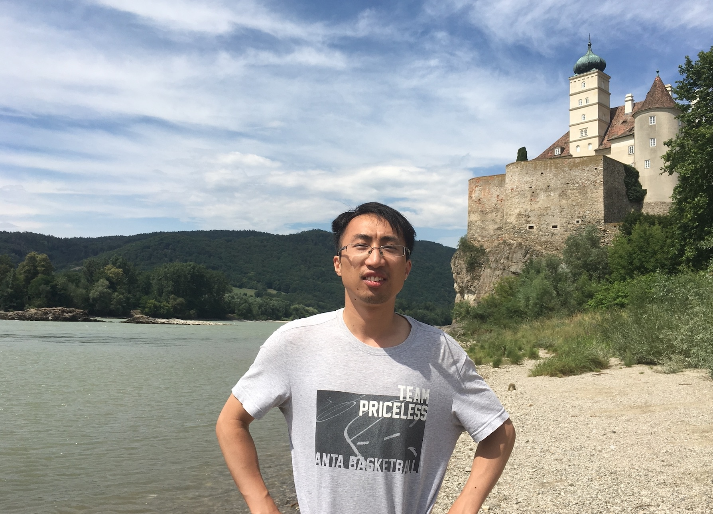

Office: N03, Ning Zhai,
Yau Mathematical Sciences Center, Tsinghua University
Beijing, China
Email: taosu@mail.tsinghua.edu.cn
I'm currently a postdoc at YMSC, supported by the 2021 International Postdoctoral Exchange Fellowship (Talent-Introduction Program).
I was a postdoc at ENS Paris from 09.2018 to 08.2020. I obtained my math PhD at UC Berkeley in the summer of 2018, advised by Vivek Shende, and Richard E.Borcherds.
My research interests include microlocal sheaf theory and Legendrian knots, Hodge theory of character varieties, and mirror symmetry.
My CV is available here.